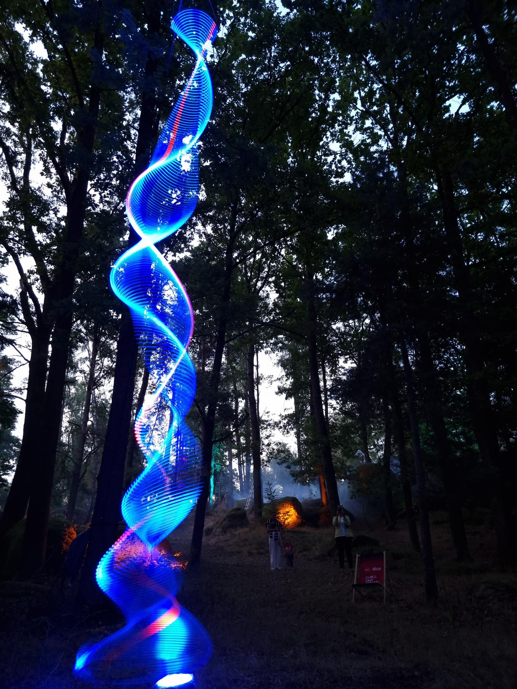
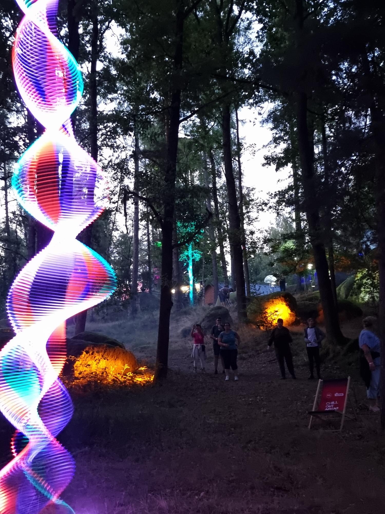
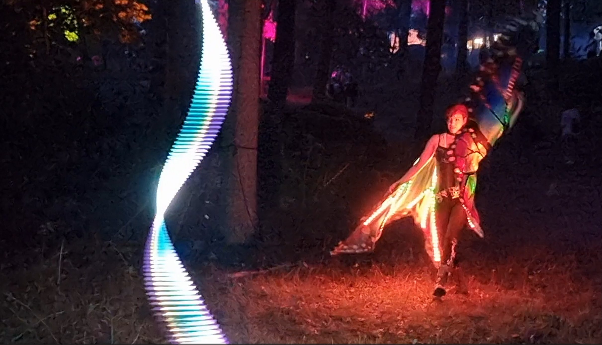
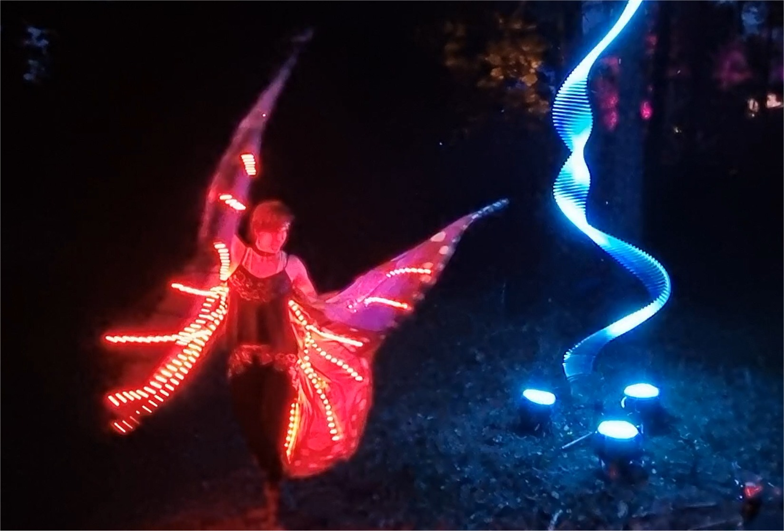
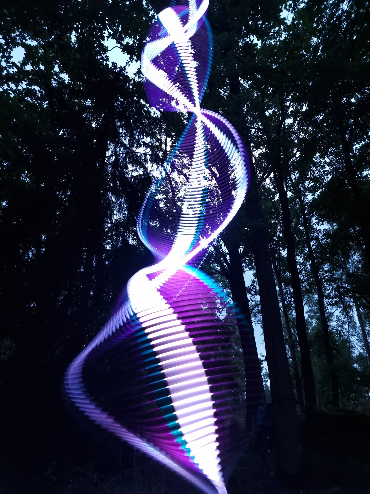
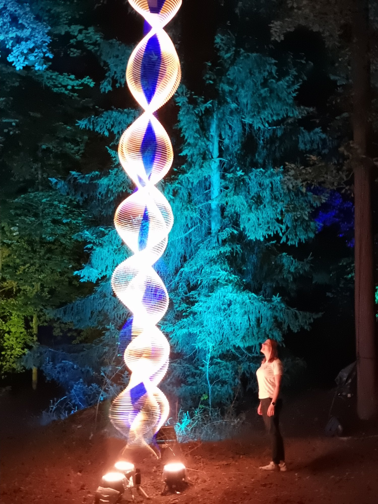

Blockheide Leuchtet: A Very Personal View
When I first read the words Blockheide Leuchtet they made a slightly awkward sound in my English imagination. I don’t speak German so I did not understand. Block sounded like a blockage, in reality it refers to a large block of rock, exactly the same as it might in English but I would not have guessed, and heide means heath, moorland or pagan. Yes pagan, German combines these ideas. Brilliant, just how brilliant was only to be revealed upon visiting.
The puzzling name soon changed to a sense of joy and wonder once I saw with my own eyes and felt with my own feelings the presence of the place. This is a charmed landscape, naturally magical, a plateau scattered with striking granite rock formations, a few in plain sight in the meadows but mostly hidden in the forest. Like treasures waiting to be discovered, they enticed me to walk many kilometres.
I have always known the physical geography of a place has a profound impact on our souls, it goes way beyond the obvious desire to climb a mountain, every landscape has a different feel, and those lucky enough to have some not so obvious quality keep their magic pure through the peace you find there and how few other people visit. Geologically this park I could see is not so different from Dartmoor. However our English wilderness has been stripped of almost all its forest and its smaller plants have been degraded by centuries of sheep grazing. It has become bleak and windswept. In contrast this is nestled in the heart of Europe, safe with hardly a breath of wind and largely unknown by the world at large, and all the better for it.
Leuchtet means to shine, give off light or glow. Something I have been fascinated by most of my life. Unlike any other light festival I have attended, which typically are in city centres, even if they are out in the country, they tend to be in better known or advertised places where many people may come. Here the plan was not to attract the largest crowd but, on the contrary, to invite a few people who would be the lucky ones. Light, art and nature all together, all gently co-existing and touching each other.
Perhaps the single most brilliant idea of the founder and director, Leo Bettinelli, beyond inviting light artists to make installations was to invite performers and musicians to wander like wandering minstrels. All acoustic and tender in their styles with more than just a hint of some wild avant-garde but none of the strong rhythmic beats that dominate so much of popular, trance and house music.
And there is clearly a common sense of purpose amongst the artists and performers, whether or not we had thought about it before, we are all in some sense chosen for our affinity to a pagan way. We do not follow the religion, at least not as far as I know, but we do have a feeling for life that is nothing like the main stream. We draw our energy from this natural source. My own work I have often described as inspired by science and love of the cosmos, the most ancient of sciences. My neighbours I felt a strong affinity for were the SpaceTimePirates and also appear like playful scientists, their installation Octopus Garden, suggests a mix of a field science project to reveal the inner workings of the living things in the forest and amplification of the natural sounds, but all strangely filtered and modulated to create something as gentle as birdsong but unrecognisable and this combined with a bewildering complex visual presence of the ‘apparatus’ and the lights emanating from them.
Another of my particular favourites was to be found almost at the far side of the light zone, the Shady Beams of Denny Voch. I recognised this as similar to the many laser displays that have long been the main stay of night clubs but here in the forests, with thick fogs drifting through the trees and branches and the shadow play of their presence intermixed with the light display created an all together more enchanting result, softer and, thanks to using video projections instead of lasers, calmer feel. There was a suggestion of a geodesic structure formed by the changing beams of light. But the real moment of magic that was to lift my senses to another level was the first time I came across the installation, I had been drawn by a haunting siren voice. And there, silhouetted against the light, sitting in almost perfect stillness, this goddess like presence calling out to her subjects. I was smitten and fell under her spell. The combination of the jazzy voice of Vera Baumann combined with misty light beams was utterly astonishing, I was tripping.
There is so much more I could write about, but it was these first experiences that are clearest in my memory and left the strongest impression. I would also like to give a special thanks to Elisabeth Kelvin, Eva-Maria, Aka Frantschesko and Marcel Hutter, who all performed beautifully beside my light wave. There were perhaps other too I missed, I shall not and cannot try describing everything. All I can say dear readers, there was more, and if you are one of the lucky ones who make it to this special wild place another year, expect magic, expect to be astonished. It will be your personal journey of discovery and each year will bring further wonders to the forest.
Paul Friedlander 26 August 2023

My installation, Light Wave, is in a clearing in the forest. Off in the distance, what look like camp fires are small flood lights, which help visitors find their way round in the darkness of night



.jpg)
.jpg)

